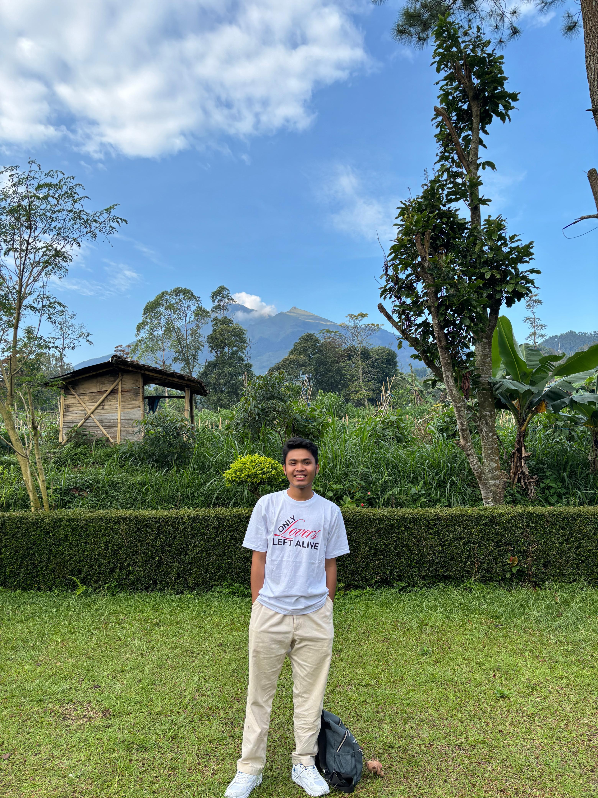

Di balik kode, ada sistem.
Mengenal Melvin Hernalong Marpaung, perjalanan, cara berpikir, dan ketertarikannya pada teknologi dari frontend hingga sistem di belakangnya.

MELVIN HERNALONG MARPAUNG — 2026Saya Melvin Hernalong Marpaung, seorang developer yang memiliki ketertarikan pada dunia teknologi, pengembangan website, sistem informasi, dan bagaimana sebuah ide dapat diubah menjadi solusi digital yang benar-benar dapat digunakan.
Bagi saya, sebuah website bukan hanya tentang tampilan yang menarik. Di balik sebuah antarmuka terdapat berbagai bagian penting seperti backend, database, API, keamanan, pengelolaan data, hingga sistem yang membuat semuanya dapat berjalan dengan baik.
Karena itu, saya tertarik untuk terus mengembangkan kemampuan dari sisi frontend, backend, database, sistem informasi, hingga IT support. Saya ingin memahami sebuah teknologi secara lebih menyeluruh, bukan hanya dari apa yang terlihat oleh pengguna.
Developer — Technology & SystemKeahlian & Teknologi
Dari tampilan hingga sistem.
Membangun antarmuka website yang responsif, terstruktur, interaktif, dan nyaman digunakan di berbagai perangkat.
Mengembangkan logika aplikasi, proses data, autentikasi, CRUD, dan komunikasi antara frontend dengan sistem di belakangnya.
Menyusun dan mengelola data secara terstruktur menggunakan database dan query agar informasi dapat diproses dengan baik.
Mengembangkan sistem berbasis web untuk membantu pengelolaan data, administrasi, dashboard, dan kebutuhan operasional.
Membantu menyelesaikan masalah teknis seperti konfigurasi, troubleshooting, perangkat, software, dan kebutuhan pengguna.
Memahami pentingnya pemeliharaan, pengecekan, backup, keamanan, dan pengembangan sistem secara berkelanjutan.
Masalah → Sistem → Solusi.
Memahami masalah
Mulai dari kebutuhanSaya percaya bahwa solusi yang baik dimulai dari memahami masalah dengan jelas. Apa yang dibutuhkan, siapa penggunanya, dan apa tujuan akhirnya.
Menyusun struktur
Merancang alurSetelah masalah dipahami, saya menyusun struktur sistem, alur pengguna, data, database, dan teknologi yang diperlukan.
Membangun solusi
Dari konsep menjadi sistemFrontend, backend, database, API, dan komponen lainnya kemudian dikembangkan menjadi satu sistem yang dapat digunakan.
Menguji & menyempurnakan
Tidak berhenti setelah selesaiSistem perlu diuji, diperbaiki, dipelihara, dan dikembangkan agar tetap relevan dengan kebutuhan penggunanya.
Cara saya melihat teknologi.
Sistem tidak harus terlihat rumit untuk menjadi powerful. Saya percaya solusi yang baik adalah solusi yang mudah dipahami dan digunakan.
Data merupakan bagian penting dari sebuah sistem. Struktur yang baik membantu aplikasi bekerja lebih konsisten dan mudah dikembangkan.
Dari tampilan interface hingga proses backend, detail kecil dapat menentukan apakah sebuah sistem terasa biasa atau profesional.
Teknologi terus berubah. Karena itu, saya terbiasa belajar, mencoba, mengevaluasi, dan mengembangkan kemampuan secara bertahap.
Teknologi bukan tujuan akhirnya. Nilainya terletak pada kemampuan untuk membantu manusia menyelesaikan pekerjaan dengan lebih baik.
Sebuah project tidak benar-benar selesai ketika pertama kali diluncurkan. Maintenance dan pengembangan adalah bagian dari perjalanan.
Apa yang ingin saya bangun.
Saya ingin terus berkembang menjadi developer yang mampu memahami teknologi secara menyeluruh — dari interface, backend, database, API, sistem informasi, hingga kebutuhan IT.
Tujuan saya bukan sekadar membuat website yang terlihat bagus, tetapi membangun solusi digital yang memiliki struktur, dapat digunakan, mudah dikembangkan, dan mampu memberikan manfaat nyata.
Karena pada akhirnya, teknologi yang paling baik bukanlah teknologi yang terlihat paling rumit.
Teknologi yang baik adalah teknologi yang mampu menyelesaikan masalah dengan cara yang tepat.
Punya ide atau masalah digital?
Jika kamu sedang membangun bisnis, personal brand, website, sistem informasi, atau memiliki ide digital yang ingin diwujudkan, saya terbuka untuk berdiskusi dan mencari solusi yang paling sesuai.